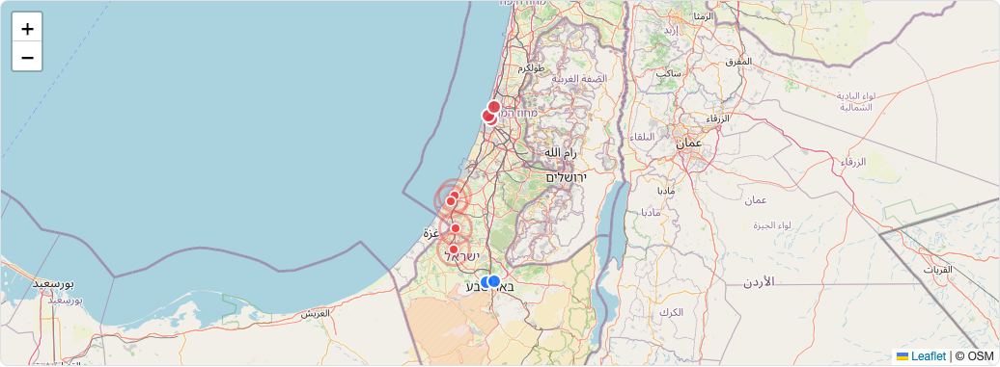
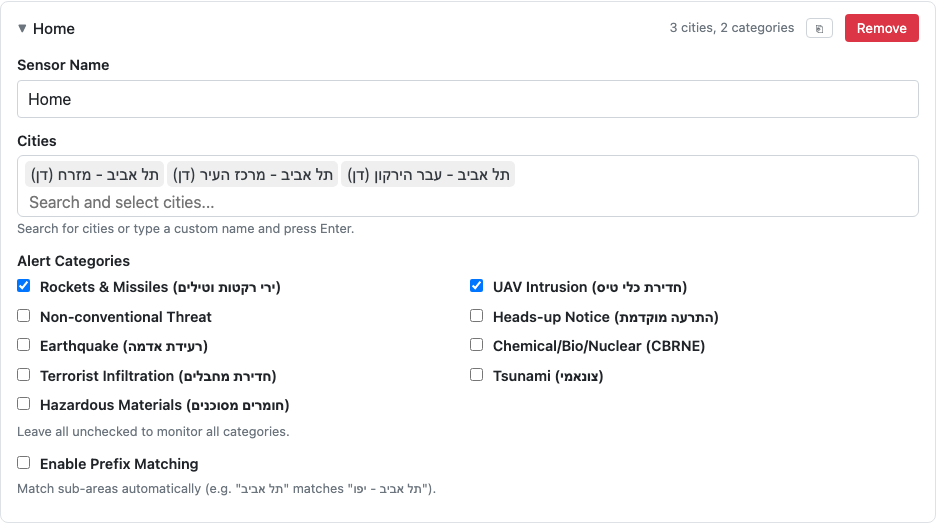
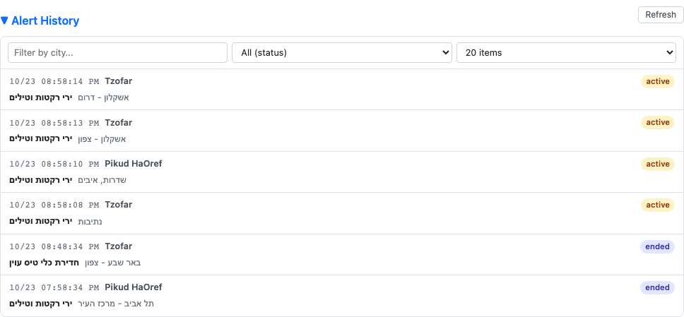

Homebridge Red Alert
צבע אדום של פיקוד העורף ב-HomeKit
Israel's Pikud HaOref (Home Front Command) alerts as HomeKit sensors. When the siren sounds for your city, your lights turn red and the way to the shelter lights up.
Homebridge Verified, free and open source under the MIT license.
All quiet.
What happens during an alert
Each location you set up (home, office, your parents' place) becomes its own HomeKit motion sensor. Here is one alert from start to finish.
The siren sounds for your city
Pikud HaOref (polled every second) and Tzofar (pushed over a WebSocket in about 50 ms) both report it. The first one in wins, and the duplicate is dropped.
Your sensor switches on
Only sensors watching that city or zone react. A nationwide alert (רחבי הארץ) switches on every sensor. Drills are ignored.
Your automations run
Lights turn red, the hallway and shelter (ממ"ד) light up, the HomePod sounds an alarm and you get a Home app notification. Webhooks can also notify Home Assistant, Node-RED or n8n.
The event ends and the sensor switches off
The sensor clears on the Home Front Command's "event ended" message. If every source goes offline, a timer clears it anyway, so it is never stuck on.
Built for the moment it matters
Two sources at once
Pikud HaOref and Tzofar run in parallel. Mako, Prog.co.il and Kumta Telegram channels can be added as backups from the built-in marketplace.
Every alert type
Rockets and missiles, hostile UAVs, terrorist infiltration, early warnings, earthquakes, tsunami, hazardous materials and non-conventional threats. Each sensor picks the types it reacts to.
All 1,450 alert zones
Pick cities from a searchable Hebrew list with their area shown. Prefix matching covers sub-areas, so תל אביב includes every Tel Aviv zone.
A health check you can automate
An optional HomeKit switch turns off when no alert source is reachable, so you find out before you need it.
Tested for life-safety cases
Over 340 tests, including checks that a new alert always beats an "ended" message and that another city's all-clear never switches off yours.
Private by design
No account, no sign-up, no telemetry. The plugin only talks to the alert sources and the webhooks you set up.
The settings page
Everything is set up inside the Homebridge UI, with dark mode and inline validation.



Install in a few minutes
- In the Homebridge UI, open Plugins and search for
red alertorpikud haoref. Install Red Alert (Pikud HaOref) by toharush. - Open the plugin settings, add a sensor and pick your cities, for example תל אביב - מרכז העיר.
- Restart Homebridge. A motion sensor appears in the Home app. Build your automations on it.
Prefer the terminal? Install it with npm:
npm install -g @toharush/homebridge-redalertRequires Homebridge 1.6 or 2.0 and Node.js 22, 24 or 25. Full options are in the configuration guide on GitHub.
Questions
Is this an official Pikud HaOref app?
No. It is a community plugin that reads the public Pikud HaOref alert feed and other public sources. Keep the official Home Front Command app and sirens as your primary warning.
How fast are the alerts?
Tzofar pushes alerts in about 50 ms and Pikud HaOref is polled every second. Whichever reports first triggers your sensor.
Is it the same as the homebridge-redalert package?
No. The unscoped homebridge-redalert npm package is an unrelated plugin from 2021. This one is @toharush/homebridge-redalert, the Homebridge Verified Red Alert plugin.
Does it work if Homebridge runs outside Israel?
The Pikud HaOref API may block requests from outside Israel. Tzofar keeps working, and the Mako source from the marketplace has no geo-restriction.
Do more sensors mean more network traffic?
No. All sensors share one alert pipeline, so 1 sensor or 20 use the same connections.
Does it cost anything?
No. It is free and open source under the MIT license.
התרעות צבע אדום של פיקוד העורף בבית החכם
Homebridge Red Alert הוא תוסף Homebridge מאומת שמחבר את התרעות צבע אדום של פיקוד העורף ל-Apple HomeKit. לכל מיקום שתגדירו (בית, עבודה, הורים) נוצר חיישן תנועה, שנדלק כשיש התרעה באחת הערים שבחרתם ונכבה כשמתקבלת הודעת "האירוע הסתיים".
- אוטומציות באפליקציית הבית: להדליק את האורות באדום, להדליק את האור בממ"ד, להשמיע אזעקה ב-HomePod
- התרעות מפיקוד העורף ומצופר במקביל, בלי כפילויות
- ירי רקטות וטילים, חדירת כלי טיס עוין, חדירת מחבלים, התרעה מוקדמת, רעידת אדמה ועוד
- בחירה מתוך 1,450 אזורי התרעה, מפת כיסוי חיה והיסטוריית התרעות
- תרגילים לא מפעילים את החיישן, והוא נכבה אוטומטית גם אם כל המקורות לא זמינים
- חינמי וקוד פתוח
התקנה: בממשק Homebridge חפשו red alert או pikud haoref והתקינו את Red Alert (Pikud HaOref), או הריצו:
npm install -g @toharush/homebridge-redalertהקוד והתיעוד המלא: Homebridge Red Alert ב-GitHub
Homebridge Red Alert is a community project and is not affiliated with Pikud HaOref or the Israel Defense Forces. Use it alongside the official Home Front Command app and sirens, never instead of them.